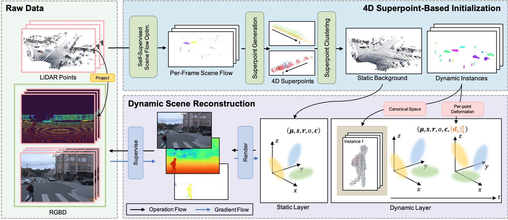

Reconstructing and decomposing dynamic urban scenes is crucial for autonomous driving, urban planning, and scene editing. However, existing methods fail to perform instance-aware decomposition without manual annotations, which is crucial for instance-level scene editing.
We propose UnIRe, a 3D Gaussian Splatting (3DGS) based approach that decomposes a scene into a static background and individual dynamic instances using only RGB images and LiDAR point clouds. At its core, we introduce 4D superpoints, a novel representation that clusters multi-frame LiDAR points in 4D space, enabling unsupervised instance separation based on spatiotemporal correlations. These 4D superpoints serve as the foundation for our decomposed 4D initialization, i.e., providing spatial and temporal initialization to train a dynamic 3DGS for arbitrary dynamic classes without requiring bounding boxes or object templates. Furthermore, we introduce a smoothness regularization strategy in both 2D and 3D space, further improving the temporal stability. Experiments on benchmark datasets show that our method outperforms existing methods in decomposed dynamic scene reconstruction while enabling accurate and flexible instance-level editing, making it a practical solution for real-world applications.
Origin
Rendering
Replace a man
Origin
Rendering
Insert a man
Our method consists of two core components: 4D SuperPoint-Based Initialization and Dynamic Scene Representation. 4D SuperPoint-Based Initialization takes LiDAR points as input and estimates scene flow using a self-supervised optimization method. Then, 4D SuperPoint Generation and 4D SuperPoint Clustering decompose the scene into a static background and dynamic instances. The dynamic instances are further used to construct a canonical space and per-point deformation $\{d_i\}_1^t$. Dynamic Scene Representation utilizes the static background to initialize the static layer, while the canonical space and per-point deformation serve as the initialization for the dynamic layer. The model is supervised by ground truth images and depth maps projected from LiDAR points.
@misc{mao2025unire,
title={UnIRe: Unsupervised Instance Decomposition for Dynamic Urban Scene Reconstruction},
author={Yunxuan Mao and Rong Xiong and Yue Wang and Yiyi Liao},
year={2025},
eprint={2504.00763},
archivePrefix={arXiv},
primaryClass={cs.CV},
url={https://arxiv.org/abs/2504.00763},
}